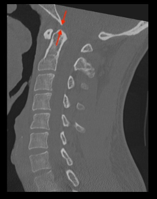

Adapted from: Knipe H, Atlantodental interval. Radiopaedia.org (Accessed on 17 Dec 2025). https://doi.org/10.53347/rID-38418
1) Description of Measurement
BDI evaluates vertical alignment between the skull base and the upper cervical spine. It is primarily used to detect vertical distraction injuries and atlanto-occipital dissociation.
2) Instructions to Measure
3) Normal vs. Pathologic Ranges
4) Important References
Bono CM, Vaccaro AR, Fehlings M, et al. Measurement techniques for upper cervical spine injuries: consensus statement of the spine trauma study group. Spine. 2007;32:593-600.
Daffner RH, Harris JH. Cervical Spine Injuries. 5th ed. Philadelphia, PA: Lippincott Williams & Wilkins; 2013:139–260
Harris JH Jr, Carson GC, Wagner LK. Radiologic diagnosis of traumatic occipitovertebral dissociation: 1. Normal occipitovertebral relationships on lateral radiographs of supine subjects. AJR Am J Roentgenol 1994;162(04):881–886
Harris JH Jr, Carson GC, Wagner LK, Kerr N. Radiologic diagnosis of traumatic occipitovertebral dissociation: 2. Comparison of three methods of detecting occipitovertebral relationships on lateral radiographs of supine subjects. AJR Am J Roentgenol 1994; 162(04):887–892
Joaquim AF, Schroeder GD, Vaccaro AR. Traumatic Atlanto-Occipital Dislocation-A Comprehensive Analysis of All Case Series Found in the Spinal Trauma Literature. Int J Spine Surg. 2021;15(4):724-739. doi:10.14444/8095
Rojas CA, Bertozzi JC, Martinez CR, Whitlow J. Reassessment of the craniocervical junction: normal values on CT. AJNR Am J Neuroradiol. 2007;28(9):1819-1823. doi:10.3174/ajnr.A0660